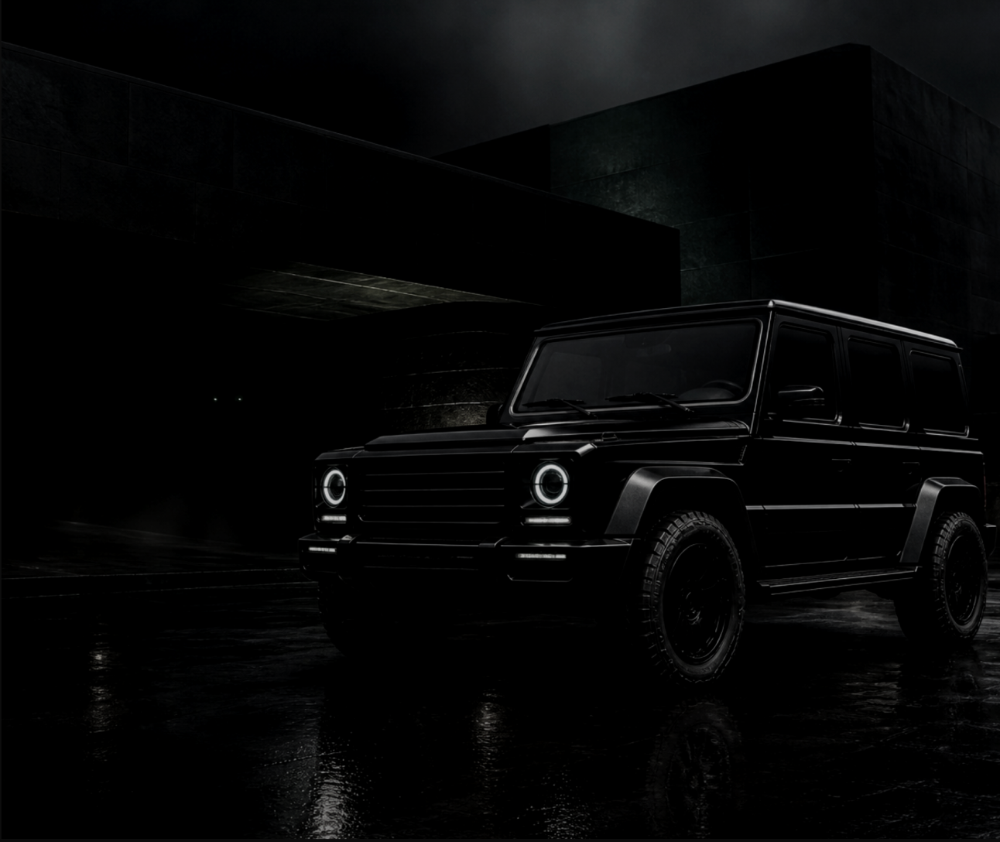
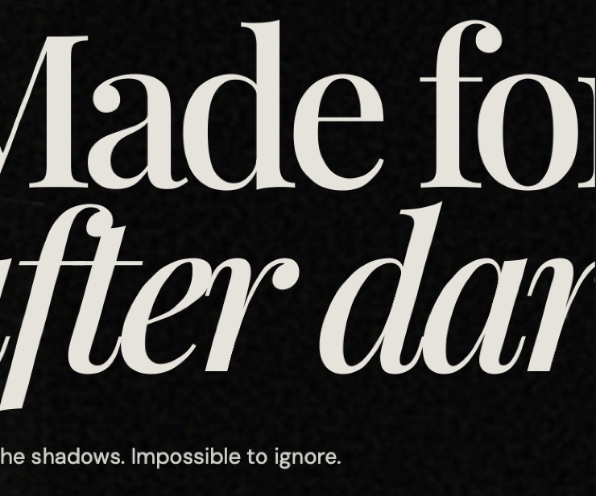
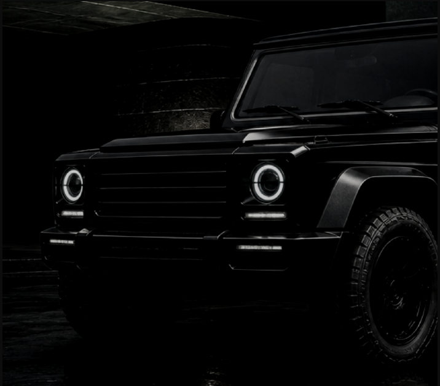
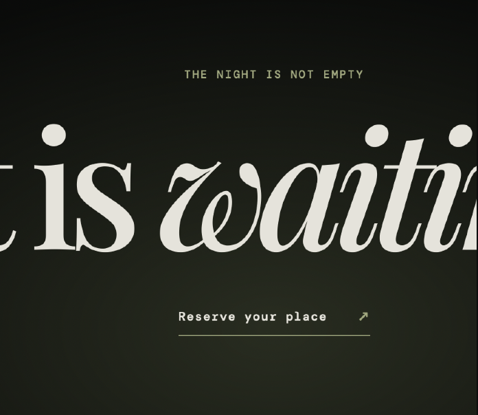
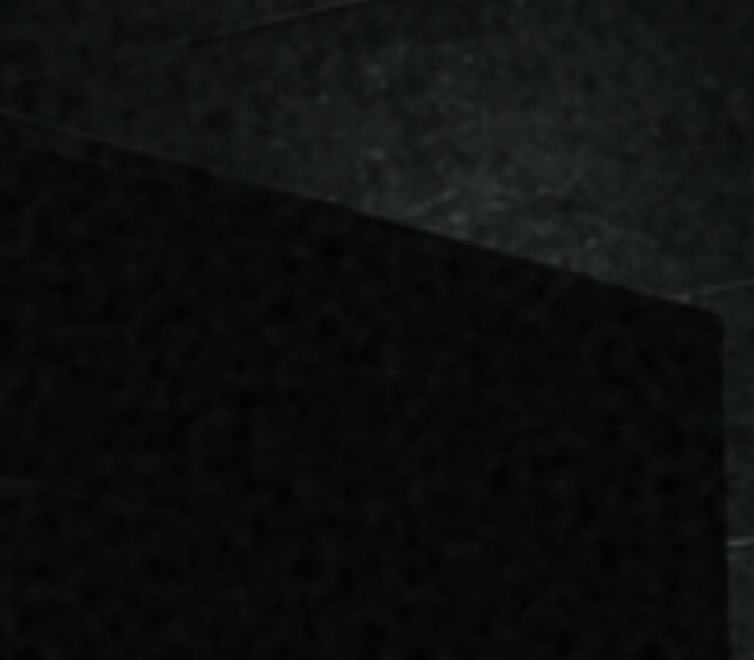
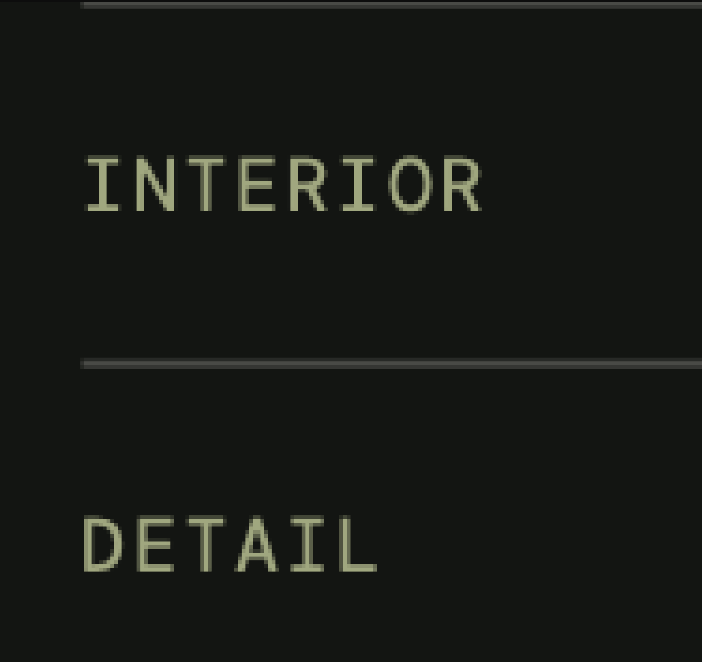
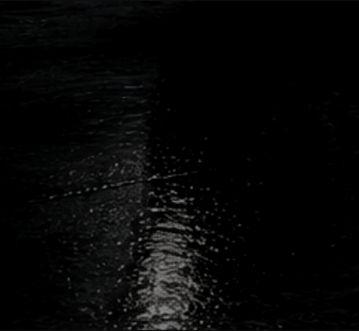
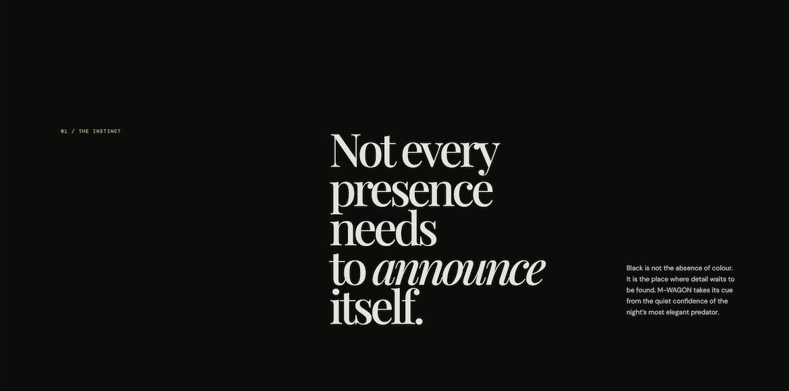
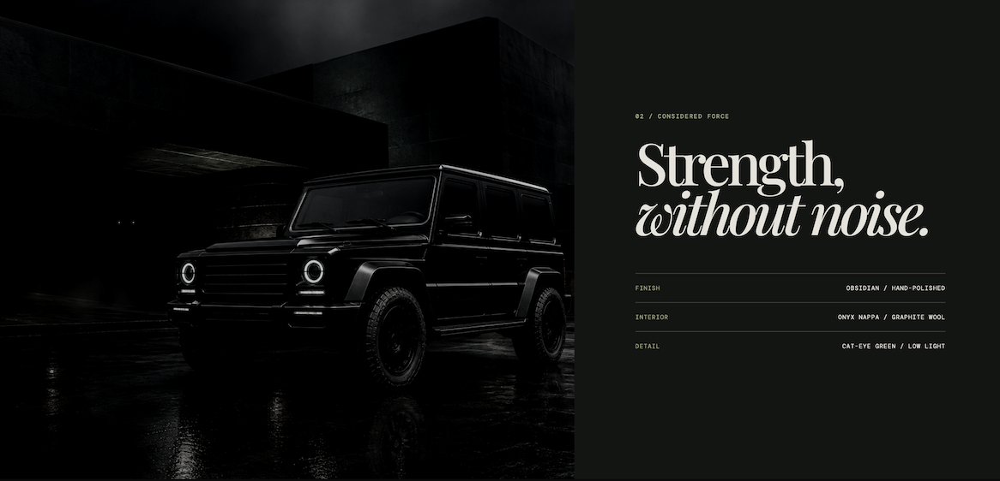
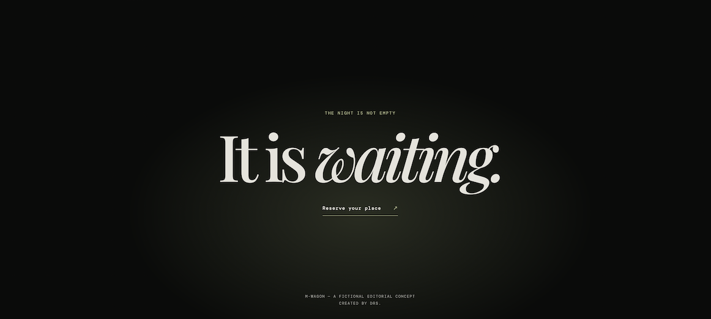

THE OPENING
PROJECT 01
M WAGON
Digital Experience | Web Design

INTRODUCTION
M Wagon is a concept website built around the idea of a vehicle as an experience, rather than simply a product.
The design combines cinematic imagery, editorial typography and a restrained interface to create a digital experience that feels atmospheric and distinctive. The goal was to give the vehicle a strong visual identity while keeping the experience clear and intuitive.
VISUAL LANGUAGE
I wanted the visual language to feel as distinctive as the vehicle itself, using cinematic imagery, editorial typography and a restrained interface to build a sense of atmosphere and exclusivity.






THE EXPERIENCE
The website is designed as a visual journey through the M Wagon and its character.
THE INSTINCT

THE DETAILS

THE CLOSING

THE TAKEAWAY
M Wagon showed me how much atmosphere can change the way a digital experience feels. It pushed me to be more intentional with typography, pacing and visual detail.
AI was used to develop the imagery for the concept, which I then integrated into the visual and digital experience.